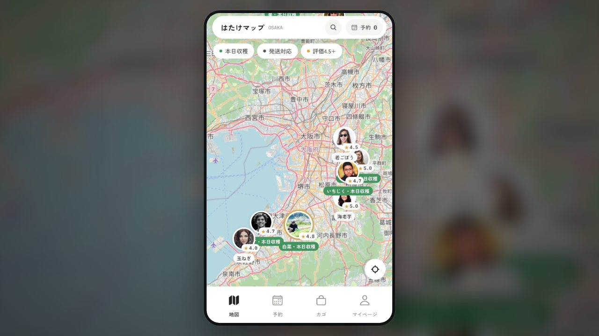

01 / Challenge
「誰が育てたか分からない野菜」しか選べず、生産者のこだわりや人柄が買い手に届かない。
Work / 2026
地図の上に生産者の顔が並ぶ農産物マーケットプレイス。顔を見て予約し、畑まで取りに行ける。

「誰が育てたか分からない野菜」しか選べず、生産者のこだわりや人柄が買い手に届かない。
地図に承認済みの生産者を顔写真つきで並べ、生産者ページ・予約カゴ・受取時間帯の指定・発送・カード決済（テスト）・双方向レビューまで備えた消費者アプリと生産者アプリ。運営の承認フローも実装。
Expo / React Native / TypeScript / Expo Router。地図は Mapbox、バックエンドは Convex（リアルタイム同期）、状態管理は Zustand。E2E は Maestro、配布は EAS Build / TestFlight。
消費者・生産者・運営の一連の流れを1日で動く状態まで作り、iOS シミュレータで E2E テスト済み。TestFlight で配布できる状態。